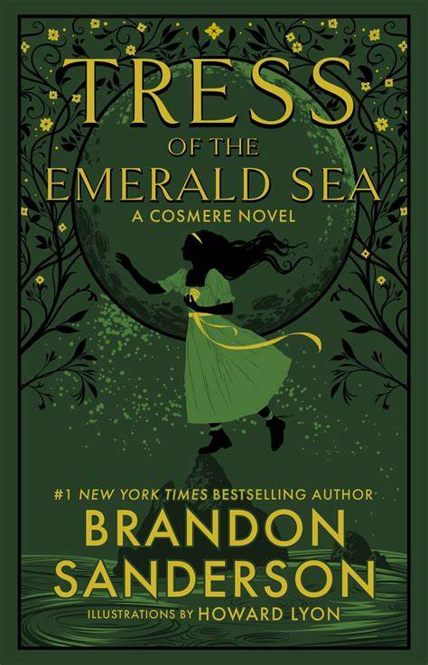

Hello World!

My name is Jake Moleski, and I am an undergraduate student at Oregon State. I'm from Portland, Oregon, and I've lived there all my life until college. Music has always been a part of my life, from high school band to the OSUMB. I play clarinet in the marching band, and trumpet in the campus band. Video games have also taken up a lot of my time. Recently, I've been playing Factorio and Civilization 6. The club that I've put the most time into has been the Human Powered Submarine club at Oregon State, which is a club where we design and build a wet submarine (a submarine that's full of water and not pressurized) that's just big enough to hold a single person. This single person pedals a crank to turn a propeller which propels the submarine.